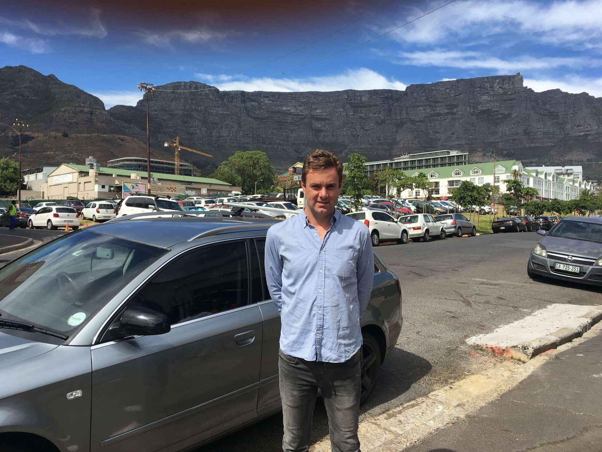
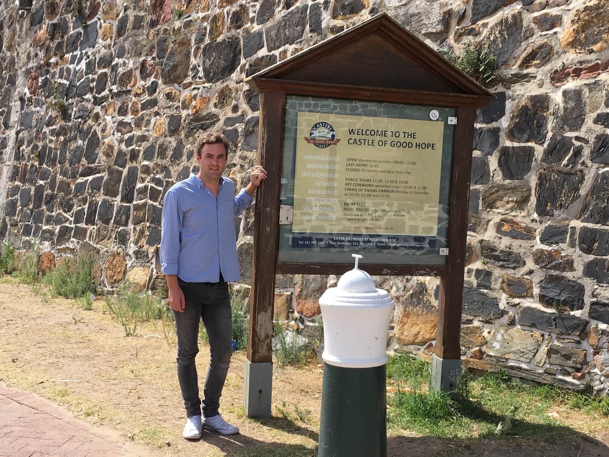
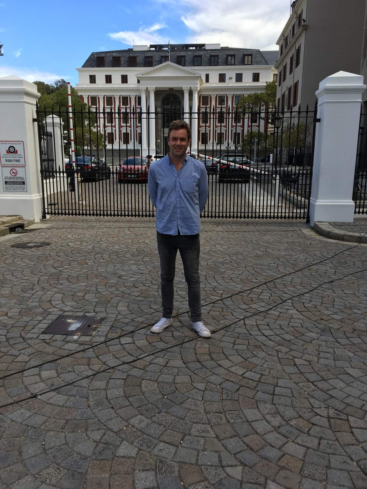
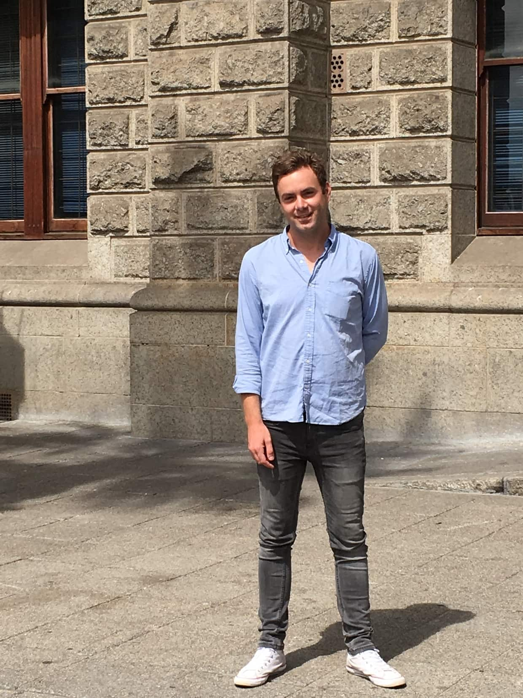

Greg
Foulkes

Tokyo

I would like to travel to Japan for many reasons but the primary reason I would like to visit there is that, technologically, it is one of the most forward thinking societies in the world that is willing to embrace many technologies that the rest of the world has been slow to implement i.e. robotics and nano.
I am also fascinated by its history, particularly with regards to world war 2 and it being the only country in the world to have been nuked.
Language
| English | Japanese |
|---|---|
| Hello | Konnichiwa |
| Thank You | Arigatou |
| Good Morning | Ohayou |
Historic Places
Good Hope Castle
The Good Hope Castle is a historical monument and a provincial heritage site
It was originally situated on the coast line of Table Bay, but following centuries of land reclamation is now situated inland.
It was built by the Dutch East India Company between 1666-1679
Parliament
The parliament of South Africa is South Africa's legislature under the current constution.
It is composed of the National Assembly and the National Council of Provinces.
It is located in Cape Town, despite Cape Town not being South Africa's Capital.
City Hall
Cape Town city hall was built in 1905.
Nelson Mandela gave his first public address after being released from prison the balcony of City Hall.
It is located to the west opposite another iconic location in Cape Towns history, the Castle of Good Hope.